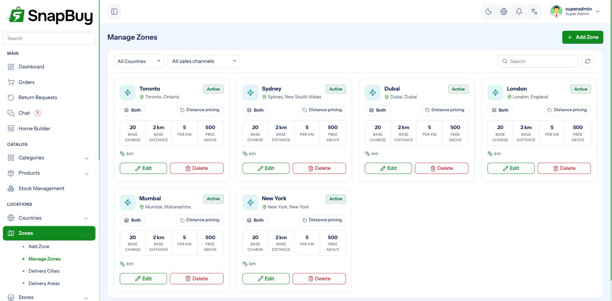
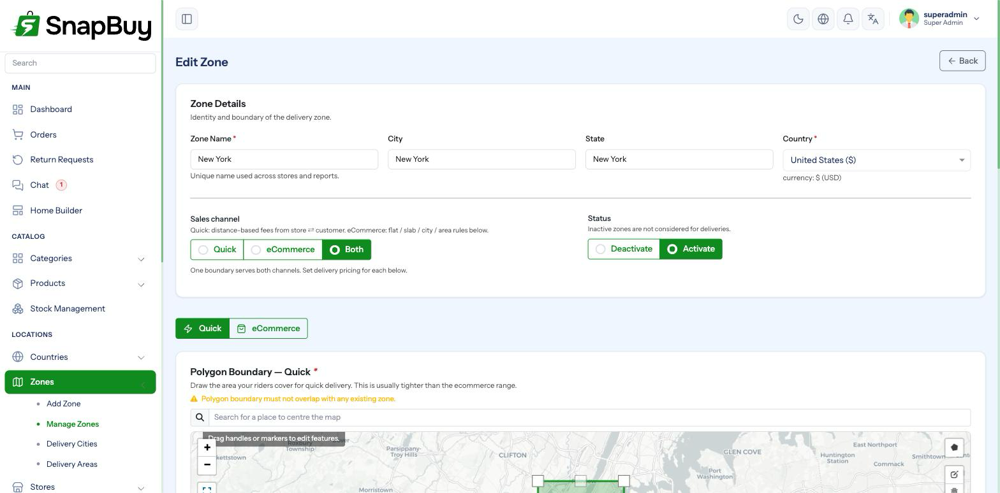
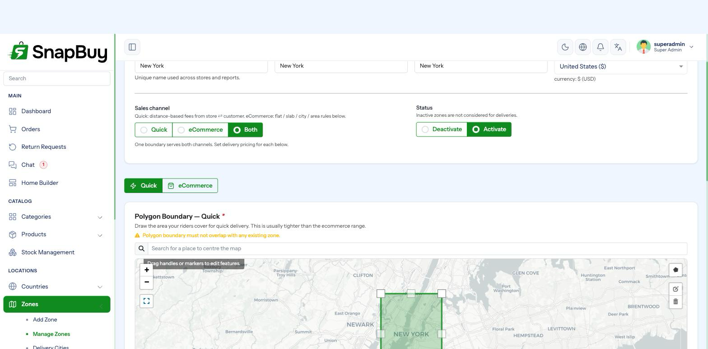
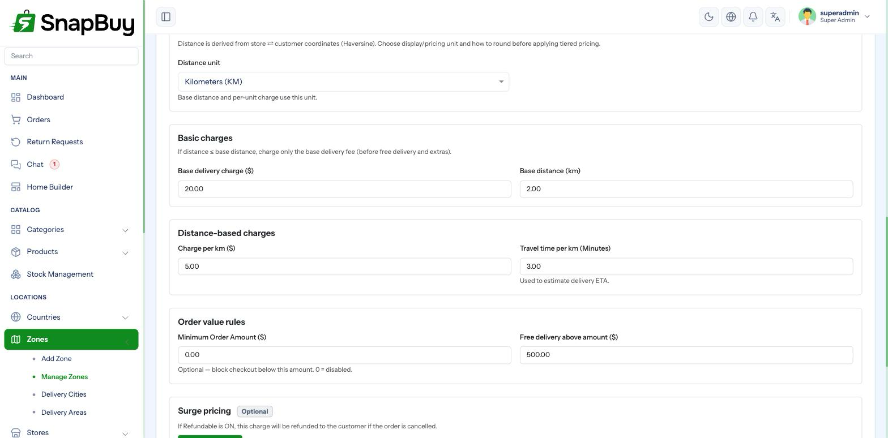
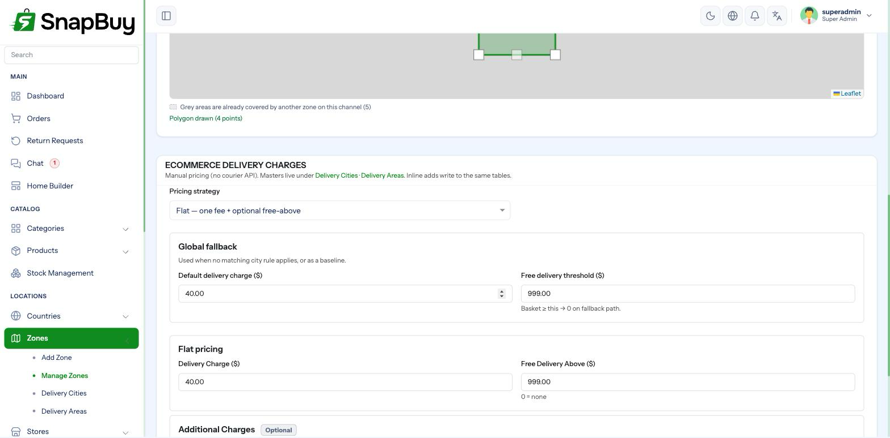
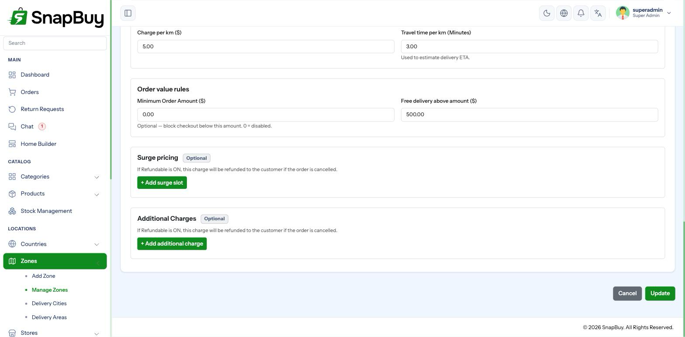
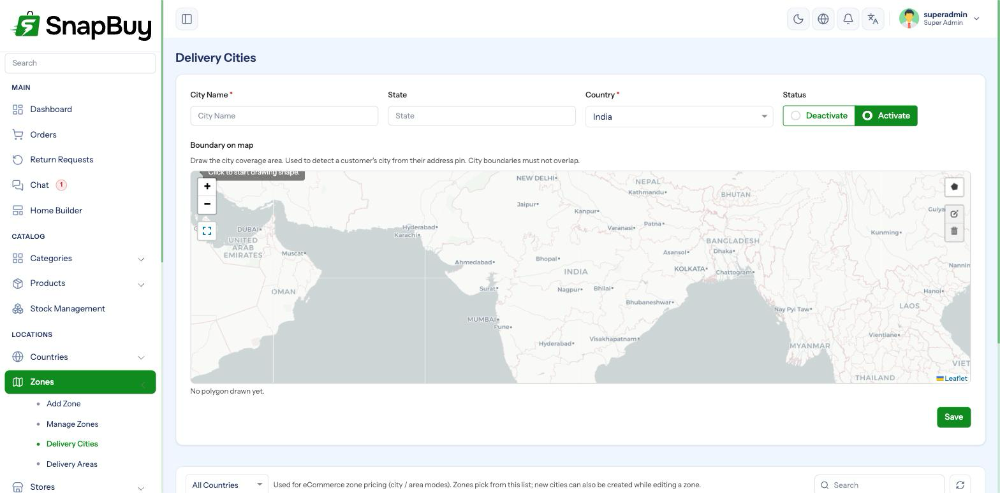

Delivery Zones
Setup Guide step 2 of 9. Menu path: Zones
A zone is the area you deliver to, drawn as a polygon on a map. It also decides what delivery costs inside that area.
Zones are the heart of SnapBuy's delivery logic. Everything else depends on them:
- A customer's address must fall inside a zone polygon, or they cannot order at all.
- Every store belongs to exactly one zone.
- Delivery charges, surge pricing and extra fees are all configured per zone.

The two sales channels
Before drawing anything, understand the channel model — it shapes the entire form.
| Channel | Meaning | Pricing model |
|---|---|---|
| Quick | Fast local delivery from a nearby store | Distance-based: base charge + per-km |
| eCommerce | Standard shipping over a wider area | Fixed rules: flat, slab, city or area |
| Both | One zone serving both | Both pricing sets, each drawn separately |
You choose this with the zone's Sales Channel field.
Why a zone can hold two boundaries
Quick delivery usually covers a few kilometres; eCommerce shipping can cover a whole state. Rather than forcing two separate zones, a zone set to Both stores two polygons — one per channel — and applies the matching price rules to each.
If you draw only one of the two, SnapBuy falls back to the boundary that has been drawn, so a half-configured zone still resolves rather than silently rejecting every address.
Creating a zone
Go to Zones → Add Zone.

Basic details
| Field | Notes |
|---|---|
| Name | Internal label — "South Mumbai", "Downtown" |
| Country | Which country this zone sits in. Create the country first. |
| City / State | Text labels, used for filtering and reporting |
| Sales Channel | Quick, eCommerce, or Both |
| Status | Inactive zones stop accepting orders immediately |
Drawing the boundary
The map uses the provider set in Map & API Keys — OpenStreetMap by default, or Google Maps.
- Use the polygon tool to click each corner of your delivery area.
- Click the first point again to close the shape.
- Drag any point to adjust it.
- If the zone serves Both channels, switch tabs and draw the second boundary.

Overlapping zones
When polygons overlap, an address can match more than one zone and the result becomes unpredictable — customers may see different charges on different attempts. Keep boundaries adjacent, not overlapping.
Draw slightly wider than you think
An address that falls a few metres outside the polygon is rejected outright with no way for the customer to proceed. A small buffer around the edge avoids losing genuine orders on the boundary.
Quick channel pricing
Distance-based. SnapBuy measures the road distance from the store to the customer using your map provider, then:
charge = base_delivery_charge
if distance > base_distance:
charge += (distance − base_distance) × charge_per_km
if free_delivery_above > 0 and order_subtotal >= free_delivery_above:
charge = 0| Field | Meaning |
|---|---|
| Distance Unit | km or mile. Base distance and per-km rate are both read in this unit. |
| Base Delivery Charge | Charged on every order, before distance is considered |
| Base Distance | Distance included in the base charge. Nothing extra is charged within it. |
| Charge Per Km | Rate applied only to distance beyond the base distance |
| Travel Time Per Km | Used to estimate delivery time shown to the customer |
| Minimum Order Amount | Customers cannot check out below this subtotal |
| Free Delivery Above | Subtotal at which delivery becomes free. 0 disables it. |
Worked example — base charge ₹20, base distance 3 km, ₹8/km:
| Distance | Charge |
|---|---|
| 2 km | ₹20 |
| 3 km | ₹20 |
| 5 km | ₹20 + (2 × ₹8) = ₹36 |
| 10 km | ₹20 + (7 × ₹8) = ₹76 |

Distance needs a working map provider
Road distance is fetched live from OpenStreetMap/OSRM or Google. If the provider is misconfigured or the key is invalid, the distance lookup fails and the customer is shown an "unable to fetch distance" error at checkout rather than a price. Test a real address after any map change.
eCommerce channel pricing
Choose one of four pricing strategies.

Flat
One charge for the whole zone.
| Field | Meaning |
|---|---|
| Flat Delivery Charge | Applied to every order |
| Flat Free Delivery Above | Subtotal at which it drops to zero |
Slab
Charge varies by order value. Add rows of min – max – charge.
| Order value | Charge |
|---|---|
| 0 – 499 | ₹60 |
| 500 – 999 | ₹30 |
| 1000 and above | ₹0 |
Leave the max of the final row blank to mean "and above".
Leave no gaps between slabs
If an order value matches no slab, SnapBuy falls back to the Default Delivery Charge. A gap between 499 and 500.01 means orders at 500.00 silently get the fallback price. Make ranges continuous.
City
Different charge per delivery city. Each row carries its own charge and optional free above value. Requires cities under Delivery Cities & Areas.
Area
The same, but at the finer delivery area level within a city.
Unmatched city or area
If the customer's city or area has no row, the Default Delivery Charge applies. Set that to a sensible value rather than 0 — otherwise unlisted locations ship free.
Zone-wide free threshold
Free Delivery Threshold applies across all four strategies. If the subtotal reaches it, delivery is free regardless of slab, city or area rules. Set 0 to disable.
Surge pricing
Surge slots add a charge during specific times of day — evening rush, weekend peaks, late night.
| Field | Meaning |
|---|---|
| Start / End | Wall-clock times, HH:MM |
| Charge | Amount added while the slot is active |
| Label | Shown to the customer — "Peak hour fee". Translatable per language. |
| Refundable | Whether this amount is returned when an order is cancelled or refunded |

Overnight slots are supported
A slot from 22:00 to 02:00 correctly wraps past midnight. You do not need to split it into two rows.
Surge is evaluated in the country's timezone
Slots use the timezone on the zone's country, not the server's clock. A wrong country timezone makes surge apply at the wrong hours.
Surge is shown separately, not hidden in delivery
Surge and additional charges are returned to the app as their own line items — they are not folded into the delivery charge. Customers see exactly what they are paying for, and refund handling can treat them differently.
Additional charges
Flat fees added to every order in the zone — packaging, handling, small-order fees. Configured separately for each channel, so quick orders and eCommerce orders can carry different fees.
| Field | Meaning |
|---|---|
| Name | Shown on the bill. Translatable per language. |
| Amount | Flat amount added |
| Refundable | Whether it is returned on cancellation or refund |
Rows with an amount of 0 are ignored.
Delivery Cities and Areas
Menu: Delivery Cities and Delivery Areas.
These serve two purposes:
- They give customers a structured city/area picker instead of free-text addresses.
- They are what the city and area eCommerce pricing strategies price against.
| Level | Belongs to | Carries |
|---|---|---|
| Delivery City | A country | Name, state, latitude/longitude, optional boundary |
| Delivery Area | A delivery city | Name, latitude/longitude, optional boundary |

Deleting a city removes its areas with it.
Only needed for city/area pricing
If your eCommerce zones use flat or slab pricing, you can skip cities and areas entirely.
How an address resolves at checkout
- The customer's coordinates are tested against zone polygons for the channel they are shopping.
- No match → they are told delivery is unavailable.
- Match → that zone's pricing applies.
- Road distance is measured (quick channel only).
- Delivery charge is calculated.
- Active surge slots and additional charges are added as separate lines.
- Free-delivery thresholds are applied last and can zero the delivery charge.
Troubleshooting
| Symptom | Cause | Fix |
|---|---|---|
| "Delivery not available at this location" | Address outside every polygon | Widen the boundary, or check the zone is Active |
| Delivery charge always zero | A free-delivery threshold is set too low, or is 0 where it should be blank | Review free-above fields on the zone and on the matched pricing row |
| "Unable to fetch distance" | Map provider misconfigured or key invalid | See Map & API Keys |
| Wrong charge on some orders | Slab gap, or unlisted city/area falling back to default | Make slabs continuous; add the missing city/area row |
| Surge applies at wrong hours | Country timezone incorrect | Fix the timezone on the country |
| Customer matched the wrong zone | Overlapping polygons | Redraw so zones do not overlap |
Checklist
- Zone assigned to the correct country
- Sales channel matches how you actually sell
- A polygon drawn for every channel the zone serves
- No overlap with neighbouring zones
- Quick pricing tested against a real address at several distances
- eCommerce slabs continuous, with no gaps
- Default Delivery Charge set to a sensible fallback
- Surge labels and additional charge names translated
- Zone status Active